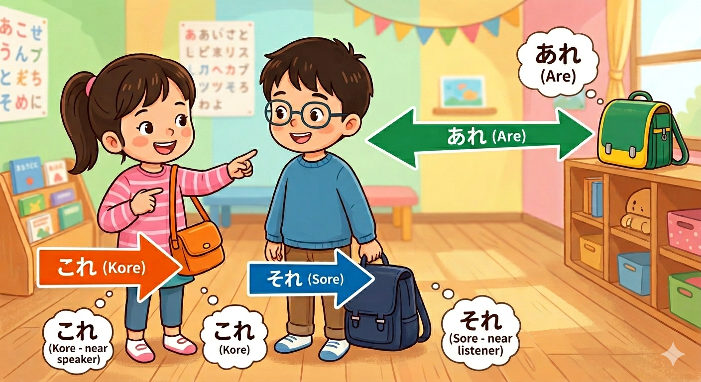
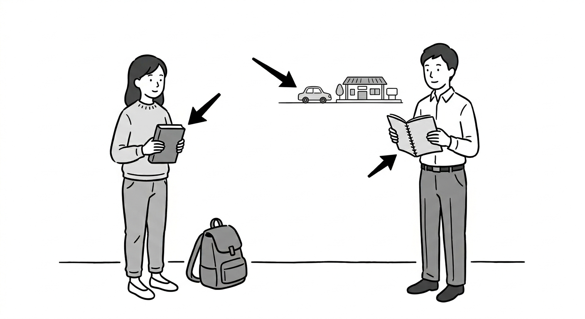

← 戻る
第2課 これ・それ・あれ
目次
- これ・それ・あれ
- この
- 〇〇の
- Kanji List
これ・それ・あれ
これ・それ・あれ = demonstrative pronouns for things
(For places, use ここ・そこ・あそこ)
- これ = this (near the speaker)
- それ = that (near the listener)
- あれ = that (far from both)

- これは本（ほん）です。→ This is a book.
- それはかばんです。→ That is a bag.
- あれは手帳（てちょう）です。That is a pocket book (over there).
※ Basic rule: answer using the same pronoun as the question. "そうです" is a general affirmative response.
- これはノートですか。
- これはかばんですか。
- あれは何（なん）ですか。
- これは「１」ですか、「２」ですか。
この
この = this (used before a noun)
- 「これ」is used alone
- 「この」is used before a noun
これは 本（ほん）です。→ This is a book.
この 本（ほん）は 高（たか）いです。→ This book is expensive.
その・あの ※Not covered in this lesson
〇〇の
の = possession (like 's in English)
- 〇〇の〇〇 = 〇〇's 〇〇
- 私（わたし）の 本（ほん）→ My book
- あなたの かばん→ Your bag
- 日本（にほん）の 車（くるま）→ Japanese car
- 「の」can stand alone
- これは 私（わたし）のです。→ This is mine.
- e.g. これは私の車です。→ This is my car.
- これは あなたのですか。→ Is this yours?
- これはあなたのかばんですか。
- それは私のタコスですか。
- あれは誰（だれ）の車ですか。・・・ Whose car is that?
- これは誰のですか。
Let's make a conversation about the photo

Kanji List
| 漢字 | 読み方 | 意味 |
|---|
| 本 | ほん | book |
| 手帳 | てちょう | pocket book |
| 何 | なん／なに | what |
| 高い | たかい | expensive |
| 車 | くるま | car |
| 駅 | えき | station |
| 誰 | だれ | who |
| 日本 | にほん | Japan |